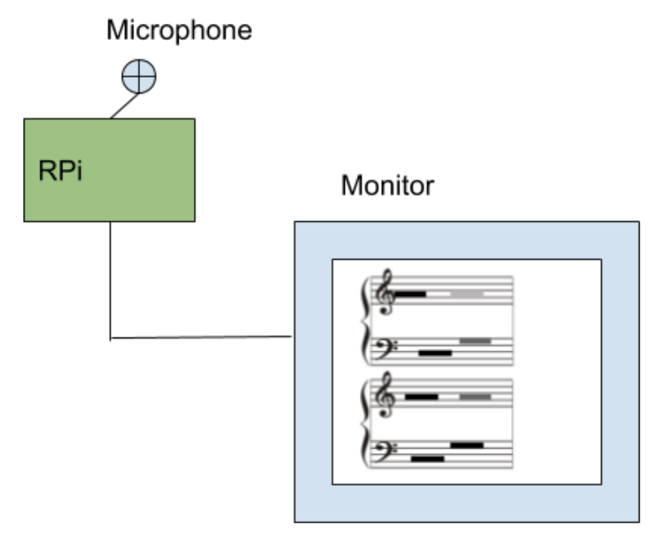
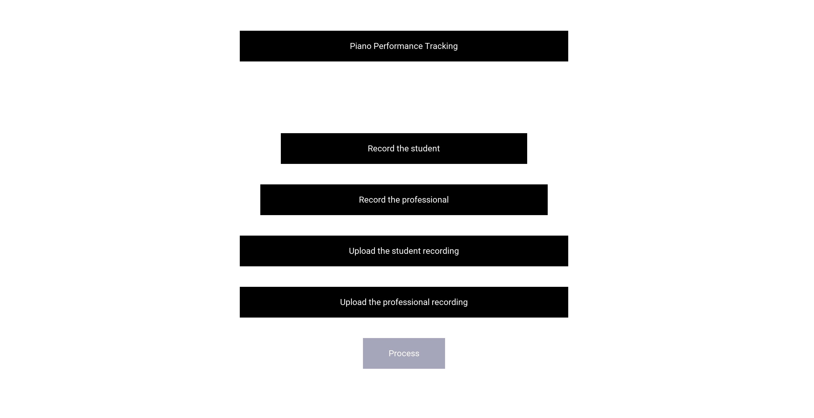
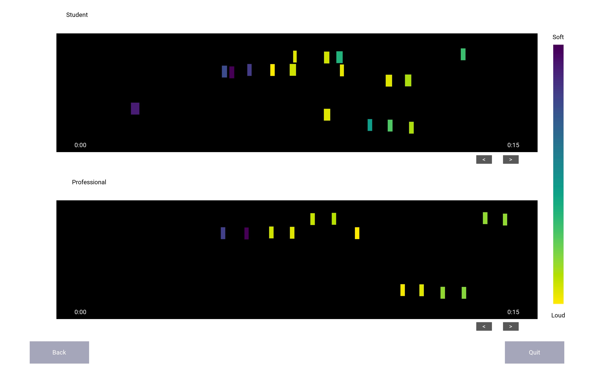
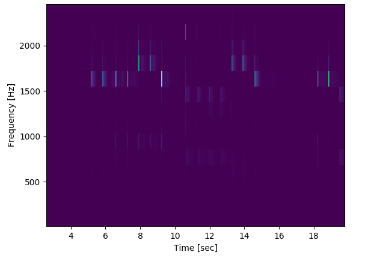
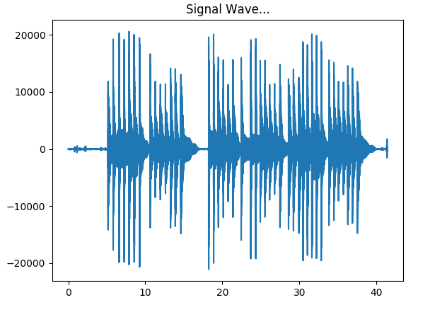
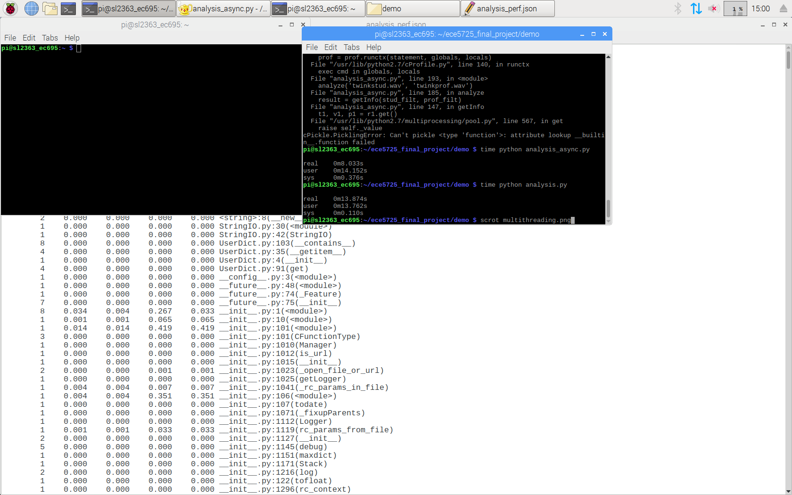

Piano Performance Tracker
May 17 2019
Shanee Lu (sl2363) and Ellaine Chou (ec695)
Video Demo
Objective
The objective of this project is to build a tool for amateur musicians to help them quantify and easily identify the areas they can improve upon.
Using a simple user interface, students can compare their recordings against those of a professional and focus on the nuances that help
accelerate their development.
Introduction
One of the struggles as an amateur musician is the inability to detect nuances and identify where they fall flat in a performance. We help pianists document and visualize where they could use improvement. From the Pi, the student can record a performance, process the recording, and display the results against a professional recording. This allows the musician to see gaps in their performance- if they rushed a certain portion or were unable to figure out the expressivity and nuances of a musical phrase.
This project is an example of an embedded system because it requires external hardware and makes use of the Raspberry Pi’s Linux kernel extensively.
We process the signals received from a USB microphone, use filters to remove unnecessary noise and smooth amplitude over time, use FFT to document the notes being played while adjusting for harmonics and interval size, and display this in a simple, user-friendly interface without requiring excessive processing time or memory usage.
Design and Testing
Overall Setup

Figure 1. Overall setup of the project.
Hardware: Mini USB microphone, RaspberryPi Model 3B, Monitor, keyboard, mouse, power cable
Software: Python (packages: kivy, aubio, numpy, matplotlib)
GUI Layout
Once the physical setup was arranged (as shown in Figure 1), we designed the software layout for the piano performance tracker. Figure 2 shows the landing page for the user to navigate from. This GUI allows the student and professional to upload or record a piece, process the results, toggle between measures, and return home or quit the page.
Figure 2. Home page.
Figure 3. Analysis results.
Processing
Before we began implementing the GUI, we needed to ensure that the core components of our project would work properly. We first tested the hardware (USB microphone) by running the following bash script. We adjusted settings on the Pi to maximize input volume and confirmed the .wav file was recorded properly.
import subprocess
def record_stud():
cmd = "arecord --device=hw:1,0 --format S16_LE --rate 44100 --duration 5 -c1 stud.wav"
subprocess.check_output(cmd, shell=True)
def record_prof():
cmd = "arecord --device=hw:1,0 --format S16_LE --rate 44100 --duration 5 -c1 prof.wav"
subprocess.check_output(cmd, shell=True)
Code A. Running a bash script to record from the USB microphone.
Now that we had .wav files to work with, we needed to find existing packages that would aid in the FFT processing and noise filtering. We first tried out scipy's spectrogram function and the wave package to visualize the raw data's frequencies and volume. We noticed the harmonic frequencies and inconsistency of frequency power. Figure 4 shows the initial results.
Figure 4. Initial spectrogram results.
Figure 5. Initial amplitude results.
We searched for many libraries and projects online and noticed that accurate identification of piano pitches has not yet been developed.
However, after more research , we found that the aubio package had functionalities that would aid our analysis. The three functionalities that aubio
helped us analyze were strike speed, pitch, and timing. Strike speed is the velocity at which the user strikes the key. To find strike speed, the initial peak amplitude of the signal
and a moving window across the sound wave were used to map the speed to a color on a spectrum of yellow (loud) to purple (soft). Pitch was the frequency that was identified.
The y-location of each note, represented as a block, was mapped according to how high the frequency was, similar to the mapping of notes on a musical staff. Lastly, we analyzed the time at which the note was
played and plotted the note's x-location accordingly.
GUI
After we confirmed that the audio recording and analysis functions were working properly, we decided to use kivy to implement the GUI. Kivy is an open-source Python framework for developing GUI applications. We created buttons to record and upload the student and professional files, process the results, toggle between measures, return home to re-record or re-upload, and quit. To record a song, we called on a bash script to record with the microphone for 5 seconds and store the recording in the proper format (mono, .wav, 16-bit, 44100 Hz). To upload a file, we used FileBrowser to navigate the directory. To create displays for the analysis, we created a widget with the FloatLayout for the student and one for the professional as well. We tested each of these functions separately to ensure the packages were installed properly and to familiarize ourselves with their implementation. We then integrated the GUI components and lastly, tied in the analysis. We resolved errors with the directories and dependencies and completed the performance tracking tool.
Performance
We noticed that the processing time took quite a while to analyze the two sound files and display the results in the GUI. The original performance of our analysis took 13 seconds, using only one core. To shorten this wait and improve performance, we made use of the Pi's four cores and distributed some of the work in the analysis processing. We used the multiprocessing library and created a pool for each of the major functions (strike speed, timing, and filtering frequency), which represent a pool of processes where work can be offloaded. Each pool used 2-3 processes, one for processing the student file, one for the professional, and in the timing case, one for mapping. After testing this implementation, our processing time dropped to 8 seconds.
"""
getInfo gathers all the information needed for the audio files, stu and prof.
Returns:
-[t1_end] and [t2_end]: array of start and end times in sec of each note
- [c1] and [c2]: array of note velocity
"""
def getInfo(stu, prof):
pool_1 = Pool(processes=10)
r1 = pool_1.apply_async(getOnset, (stu, ))
r2 = pool_1.apply_async(getOnset, (prof, ))
r1.ready()
r2.ready()
t1, v1, p1 = r1.get()
t2, v2, p2 = r2.get()
pool_1.close()
pool_1.join()
pool_2 = Pool(processes=10)
r3 = pool_2.apply_async(getTimes, (t1, ))
r4 = pool_2.apply_async(getTimes, (t2, ))
r5 = pool_2.apply_async(mapVel, (v1, v2, ))
r3.ready()
r4.ready()
r5.ready()
t1_s, t1_e = r3.get(timeout=TIMEOUT)
t2_s, t2_e = r4.get(timeout=TIMEOUT)
c1, c2 = r5.get(timeout=1)
pool_2.close()
pool_2.join()
return zip(t1_s, t1_e, c1, p1), zip(t2_s, t2_e, c2, p2)
Code B. An instance where we implemented multiprocessing to speed up performance.
Figure 6. Improvement in processing performance.
Results
For the user interface, we were able to execute the piano performance tracker in the way we had envisioned. The GUI interface and workflow followed the initial plan and made it very simple for the user to adapt to. The analysis display was close to what we had imagined but was not 100% accurate with identification of pitches and entry of the notes. Unfortunately, accurate identification of piano frequencies has not been achieved in the audio processing industry as a whole. Given our experience and time frame, we used the resources available to us and were able to produce a minimum viable product that still reveals important discrepancies between a student and professional recording.
Conclusion
Our project was able to provide the user with a simple interface to compare their recording against that of a professional. This gave the student insight into their performance, especially in terms of strike speed, which is one of the most difficult skills to master as an amateur musician. We learned that audio processing and filtering of piano frequencies did not work perfectly, as there were phantom notes detected, but volume and time of entry are areas that can still aid the student as they practice.
Future Work
We would definitely explore more methods of processing audio files and filtering piano frequencies. We could look into the pattern of frequencies to those in existing pieces, similar to Shazam's strategy of identifying songs. This would allow us to have more data to work with and filter out predictable noise or misinterpretations. Lastly, if we are able to develop more robust filtering, we could incorporate processing of left and right hands to give the user a comprehensive analysis of their performance.
Work Distribution

The work was distributed as follows: Shanee worked on the project design, including hardware setup, GUI layout, and workflow. She tested the initial spectrogram and amplitude analysis, recordings, and implemented the GUI's home page, recording, uploading, and page layout. Ellaine implemented the audio processing, using aubio, numpy, and matplotlib, and displayed the results using kivy. She worked on improving the Pi's performance with multiprocessing as well.
Parts List
- Raspberry Pi $35.00
- Mini USB Microphone $5.95
- Monitor, Keyboard, Mouse, and Cables - Provided in lab
Total: $40.95
References
Aubio ExamplesRecording Audio on the Raspberry Pi
Bootstrap
Python Multiprocessing Documentation
Kivy FileBrowser Documentation
Kivy Widget Documentation